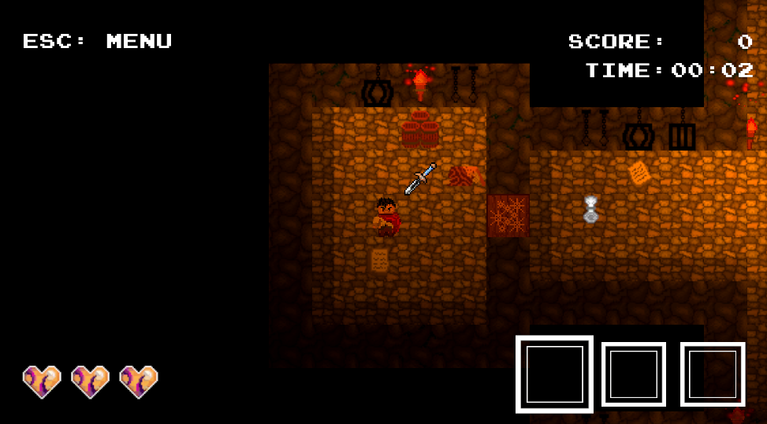
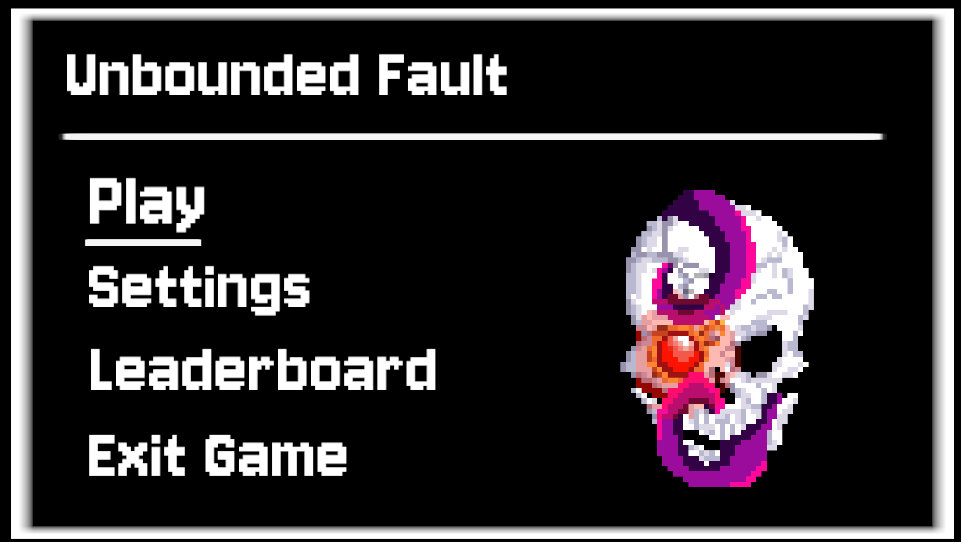
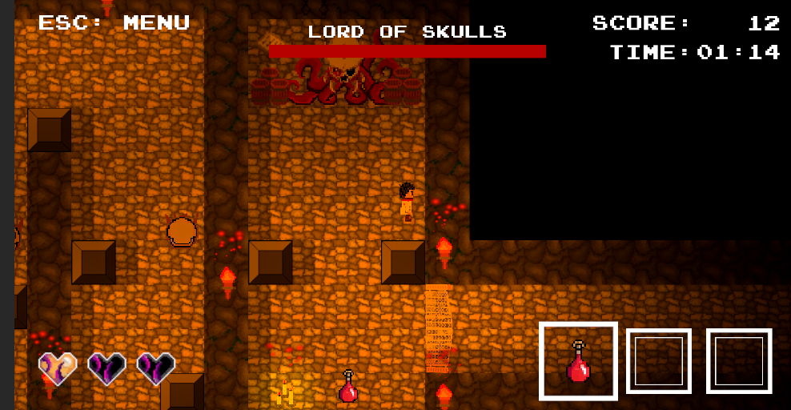

Screenshots


Project Overview
Unbounded Fault is a top down adventure game where the player must reach the end of the level, while solving puzzles and fighting enemies.
The player's performance is tracked through scores, and they can add it to the leaderboard once completing the game.
There are many setting options available for accessability, such as brightness and sound levels.
Features and Tools used
Key Features
- Gameplay with simple controls and engaging gameplay
- HUD with information clearly displayed
- Expansive map with secret passages
- Scorekeeping and leaderboard to encourage competition
Technologies Used
- Developed using Unity.
- Graphics created using Aseprite
- Audio from Pixabay
Development Process
This was developed as a project for the Interactive Media course at the University of York. The goal was to create a project as a group. I was mainly responsible for implementation of the HUD, as well as the leaderboard system. The HUD was designed to display information that would be useful for the player as clearly as possible. This was achieved through large texts and icons. The leaderboard system was created to encourage replaying the game in order to reach the high score.
Reflections
The main learning experience of this project was working on a project long term with a group. I felt I was able to contribute a meaningful amount to the project, however I may have been hesitant when asking for assistance. The HUD and leaderboard was implemented without much difficulty.